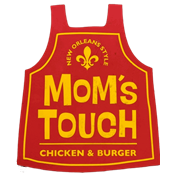

맘스터치 #홈페이지 바로가기우리는 평소에 "오늘은 뭐먹지"라는 생각을 주로 하고는 한다. 이런 생각이 들 때 나는 햄버거를 주문하는 편이다.
모든 물건, 음식은 시장 경제에 따라 변하기 마련이다. 햄버거 역시 재료와 가격의 변화가 있었다. 이것이 어떻게 달라졌는지 그 변화에 대해 알아보고자 한다.

맘스터치 #홈페이지 바로가기
햄버거의 기원과 발전
|
2020년부터 2022년까지 주요 햄버거 브랜드의 매장 수 비중을 비교하여
국내 햄버거 시장의 변화를 살펴본다.
또한 같은 기간의 소비자물가와 대표 제품 가격의 변화를 비교하고,
브랜드별 제품 구성의 변화도 알아본다.
조사 기준
비교 지역: 대한민국
비교 시기: 2020년 말, 2021년 말, 2022년 말
비교 대상: 맥도날드, 버거킹, 롯데리아, 맘스터치
비중 기준: 비교 대상 4개 브랜드의 매장 수 합계에서 각 브랜드가 차지하는 비율
계산 방법: 해당 브랜드 매장 수 ÷ 비교 대상 매장 수 합계 × 100
표시 방법: 비중은 소수점 둘째 자리까지 표시하고, 괄호 안에 매장 수를 기록
| 브랜드 | 매장 수 비중 (%) / 매장 수 (개) | ||
|---|---|---|---|
| 2020년 말 | 2021년 말 | 2022년 말 | |
| 맥도날드 | 11.77% (407개) | 11.45% (403개) | 11.20% (399개) |
| 버거킹 | 11.80% (408개) | 12.50% (440개) | 13.24% (472개) |
| 롯데리아 | 38.45% (1,330개) | 37.67% (1,326개) | 36.45% (1,299개) |
| 맘스터치 | 37.99% (1,314개) | 38.38% (1,351개) | 39.11% (1,394개) |
| 합계 | 100% (3,459개) | 100% (3,520개) | 100% (3,564개) |
이 표는 매출액이나 판매량을 기준으로 한 시장 점유율이 아니다.
KFC, 노브랜드버거, 수제버거 전문점 등은 계산 대상에서 제외하였다.
따라서 표의 비중을 국내 전체 햄버거 시장의 점유율로 해석해서는 안 된다.
반올림으로 인해 개별 비중의 합계는 100%와 약간 다를 수 있다.
매장 수를 기준으로 보면 2020년에는 롯데리아가 비교 대상 중 가장 많았으나,
2021년에는 맘스터치가 롯데리아를 앞섰다.
2022년까지 맘스터치와 버거킹의 매장 수는 증가한 반면,
롯데리아와 맥도날드의 매장 수는 감소하였다.
다만 매장마다 규모와 매출이 다르므로,
매장 수만으로 브랜드의 매출 순위를 판단할 수는 없다.
| 구분 | 2020년 | 2021년 | 2022년 |
|---|---|---|---|
| 연평균 소비자물가지수 | 100.00 | 102.50 | 107.72 |
| 전년 대비 상승률 | 0.5% | 2.5% | 5.1% |
2020년 대비 2022년의 누적 물가 상승률은
(107.72 ÷ 100.00 - 1) × 100 = 7.72%이다.
연도별 상승률을 단순히 더하는 대신 지수의 비율로 계산하였다.
| 브랜드 | 제품 | 2020년 말 | 2021년 말 | 2022년 말 | 2020년 말 대비 상승률 |
|---|---|---|---|---|---|
| 맥도날드 | 빅맥 | 4,500원 | 4,600원 | 4,900원 | 약 8.9% |
| 버거킹 | 와퍼 | 5,900원 | 6,100원 | 6,900원 | 약 16.9% |
| 롯데리아 | 불고기버거 | 3,900원 | 4,100원 | 4,500원 | 약 15.4% |
| 맘스터치 | 싸이버거 | 3,800원 | 3,800원 | 4,300원 | 약 13.2% |
가격 상승률은 (2022년 말 가격 ÷ 2020년 말 가격 - 1) × 100으로 계산하였다.
세트 가격, 배달 가격, 쿠폰 및 행사 할인 가격은 포함하지 않았다.
특수 매장이나 일부 매장에서는 판매가격이 다를 수 있다.
비교한 네 제품의 가격 상승률은 약 8.9~16.9%로,
같은 연도 범위의 연평균 소비자물가 상승률인 7.72%보다 수치상 높았다.
다만 소비자물가는 연평균이고 제품 가격은 연말 기준이므로,
두 상승률의 차이는 참고용으로 해석해야 한다.
또한 이 표는 같은 이름의 제품 가격을 비교한 것으로,
중량이나 원재료 구성의 변화를 반영한 단위 중량당 가격 비교는 아니다.
이 기간 햄버거 브랜드들은 매장 확대뿐 아니라
지역 식재료 활용, 패티 구성 변경, 새로운 제품 형태,
메뉴 정리 등을 통해 경쟁하였다.
따라서 햄버거 시장의 변화는 가격과 매장 수뿐 아니라
제품 구성의 변화도 함께 살펴볼 필요가 있다.